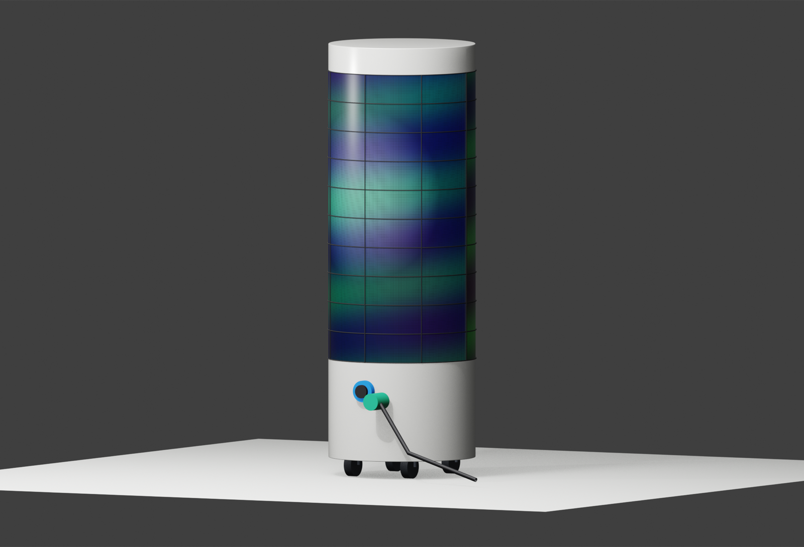
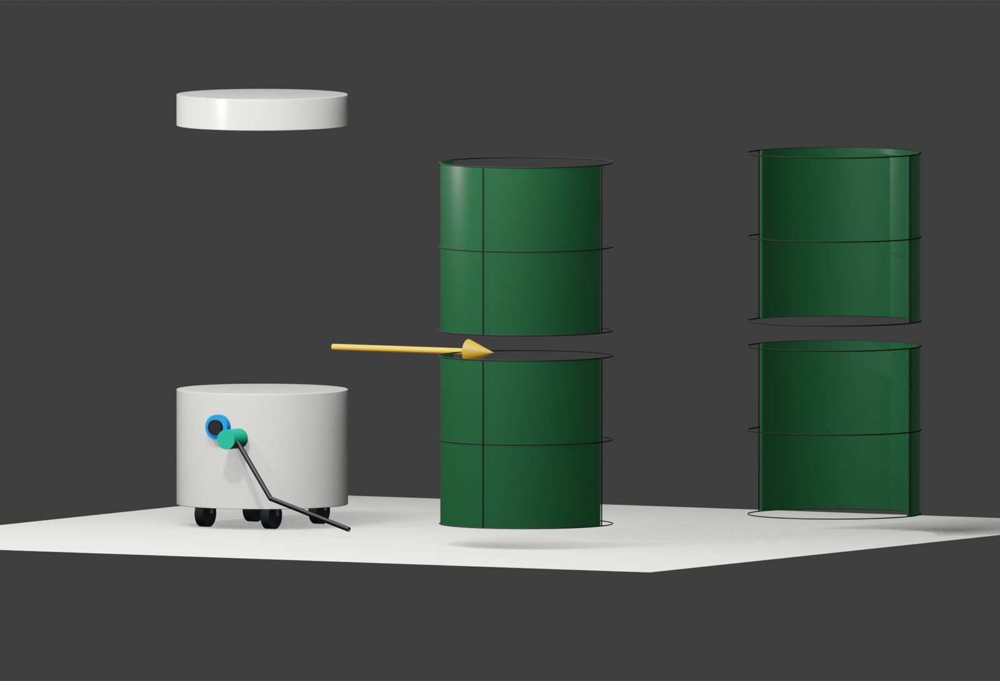
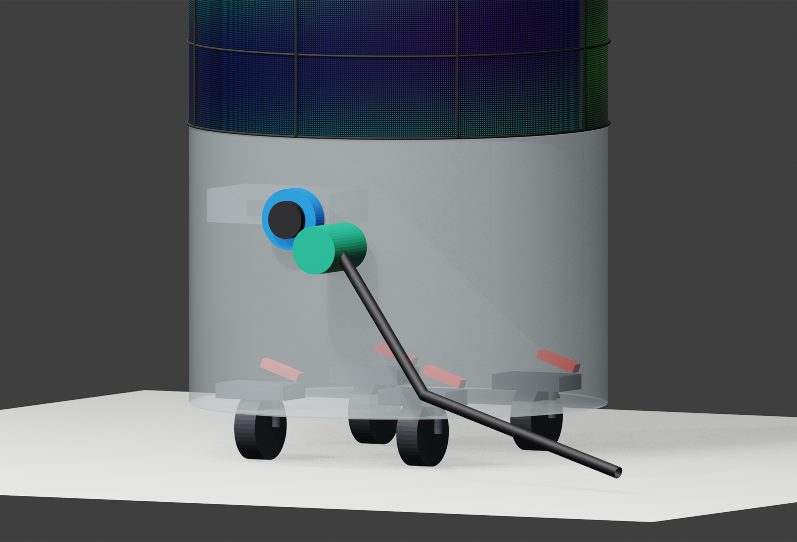
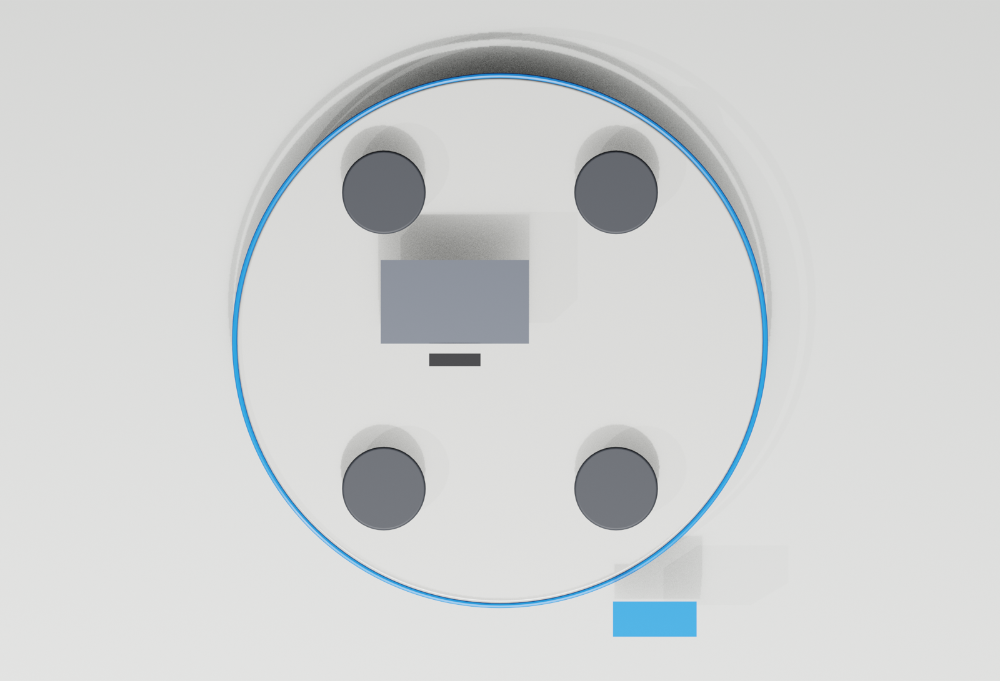

仕様書だけでは伝わらない
サイズ、質感、設置時の存在感、配線まわりは、文章や2D図面だけだと意思決定者に伝わりにくくなります。

AI x DIGITAL SIGNAGE
特注デジタルサイネージの完成像を、 写真や仕様書だけで終わらせません。 AI画像、3Dモデル、Webプレビューをまとめ、 商談前に完成イメージを共有します。
WHY 3D PROPOSAL
サイズ、質感、設置時の存在感、配線まわりは、文章や2D図面だけだと意思決定者に伝わりにくくなります。
筐体の形、分割構造、表示面の見え方を先に共有できると、後戻りや説明のやり直しを減らせます。
AIで作った雰囲気画像とBlenderの確認ビューをLPやPDFに載せることで、提案の説得力を上げられます。
LIVE WEB 3D
Web用3DモデルをLP内に配置。 ブラウザ上で回転・確認できます。 説明では確認画像や構造図へ切り替えます。

Web 3D preview
SERVICE FLOW
設置場所、寸法、表示面、屋内外、電源や接続条件など、見た目と構造に関わる条件を整理します。
完成イメージ、素材感、利用シーンをAIで作成し、早い段階で「見せたい雰囲気」を合わせます。
筐体形状、表示面、分割、配線や接続位置などを3Dモデルで確認し、必要なビューを書き出します。
Web上で動く3Dプレビュー、確認画像、提案コピーをまとめ、商談や実績紹介に使える形へ整えます。
ANONYMIZED CASE
円筒型サイネージの相談で得た確認観点を匿名化。 顧客名は出さず、 BANTEXの提案プロセスとして見せます。



BANTEX OFFER
製作前の案件でも、完成像や設置感を見せられます。 特注サイネージやイベント什器など、 形状説明が難しい案件に向いています。
完成イメージ、設置シーン、素材感を先に見せるための画像を作成します。
正面、背面、分割、接続部、上面など、相手に伝えるべき確認ビューを作ります。
3DモデルをLP内で動かし、提案や実績紹介としてそのまま見せられる形にします。
DELIVERABLE SAMPLE
NEXT ACTION
ラフな要望、既存仕様書、写真、手描きメモからでも、AIイメージと3D確認ビューに展開できます。